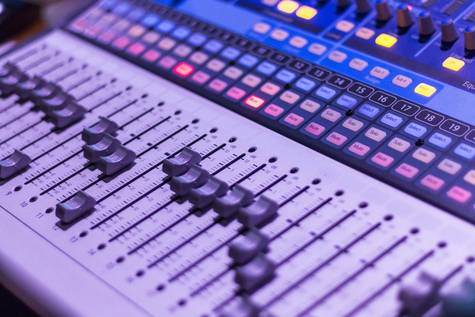

Sobre a HarmoniSound

Um estúdio de gravação localizado em Foz, a HarmoniSound traz para o mercado a melhor qualidade para as suas músicas. Fundada em 2017, a HarmoniSound já trabalhou com diversos artistas famosos em escala mundial, como Anitta, Luísa Sonza, Gabi Sampaio, Zé Felipe, Wesley Safadão, entre muitos outros.
Nossa missão é: "Levar a música nacional a outro nível.".
Temos profissionais experientes e antenados às mudanças no mundo da música. O atendimento possui padrão de excelência e agilidade, garantindo qualidade para suas músicas e a satisfação dos nossos clientes.
Localização do Estúdio
Nosso estúdio de gravação está localizado na cidade de Foz do Iguaçu, no estado do Paraná.
Benefícios
- - Atendimento aos Clientes;
- - Gravação em alta qualidade;
- - Espaço diferenciado;
- - Localização;
- - Excelentes engenheiros de gravação, mixagem e masterização.
